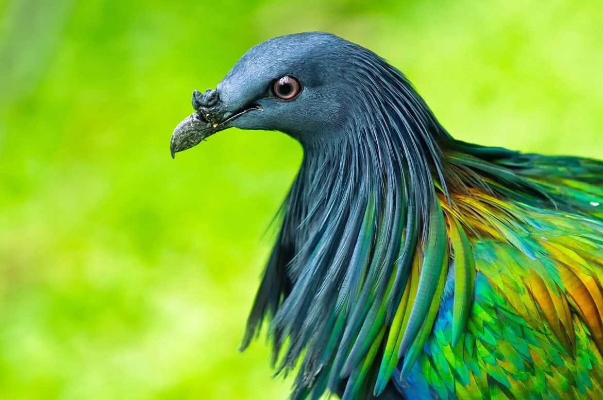
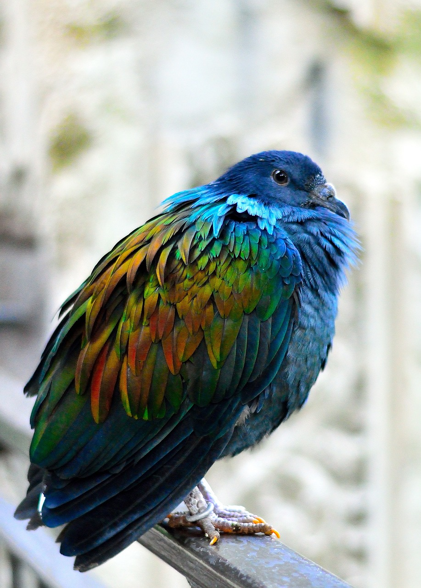
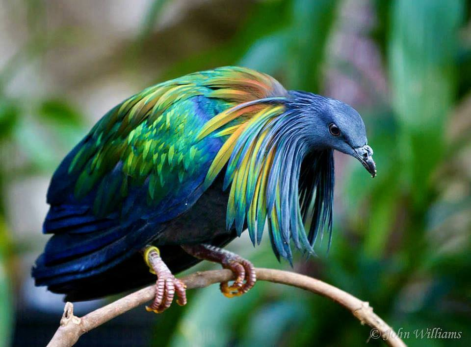
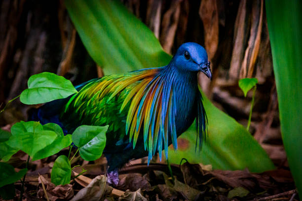

Pomba Nicobar
Informações
O Pombo-de-Nicobar (Caloenas nicobarica) é um pombo encontrado em pequenas ilhas e nas regiões
costeiras das Ilhas Nicobar, a leste, através do arquipélago malaio, à Solomons e Palau. É o
único membro vivo do Gênero Caloenas. A área de nidificação do pombo de Nicobar abrange as
ilhas Andaman e Nicobar da Índia, o Mergui Arquipélago de Mianmar, ilhas de sul-ocidental da
Tailândia, Malásia Peninsular, no sul do Camboja e Vietnã, e muitas das pequenas ilhas entre
Sumatra, a Filipinas e as Ilhas-de-Salomão. Em Palau, as únicas distintas subespécies Caloenas
nicobarica pelewensis foi encontrado.



Características
Comportamento
O Pombo-de-Nicobar vaga em bandos de ilha para ilha, geralmente dormindo em ilhotas no mar,
onde há predadores ocorrem e passa o dia em áreas com melhor disponibilidade de alimentos, não
se afastando de áreas habitadas por seres humanos. Sua alimentação consiste de sementes, frutos
e brotos, e é atraído por áreas onde grão está disponível. A pedra moela ajuda a triturar
alimentos duros. Seu voo é rápido, com batidas regulares e um filme de nítida ocasional das
asas, como é característico de pombos em geral.
Ao contrário de outros pombos, os grupos tendem a voar em colunas ou em fila única, e não em um
rebanho solto. A cauda branca é proeminente em voo quando visto de trás e pode servir como uma
espécie de " farolete", mantendo rebanhos junto ao atravessar o mar ao amanhecer ou ao
anoitecer. Falta de uma cauda branca dos jovens pássaros é um sinal de sua
imaturidade claramente visível para membros da mesma espécie - a um pombo-de-Nicobar adulto, é óbvio
à primeira vista, que não são potenciais concorrentes para companheiros, nem tem idade suficiente
para a segurança e para guiar o columbário de uma ilha para outra.
Conservação
Os Pombos-de-Nicobar são caçados para alimentação, e também para e por pedras que eles engolem
e vão parar nas moelas.
A espécie está desaparecendo devido ao tráfego ilegal para servir como animal de estimação no
ercado, mas como é no Apêndice I da CITES, esse comércio é geralmente ilegal.
Internacionalmente, a reprodução em cativeiro é capaz de suprir as aves exigidos pelos jardins
zoológicos, onde esta ave atraente e incomum é muitas vezes visto.
Além disso, o aumento das viagens introduz predadores para mais e mais dos locais de
reprodução e colônias do Pombo-de-Nicobar podem ser levados a abandonar esses locais ou ser
destruído completamente. Embora o pássaro está amplamente distribuído e em alguns locais muito
comum - mesmo em pequena Palau é ainda razoavelmente abundantes, com um número estimado de
1.000 aves adultas restantes, o seu futuro a longo prazo é cada vez mais posta em causa. Por
estas razões, a IUCN considera Caloenas nicobarica um quase ameaçada espécie.